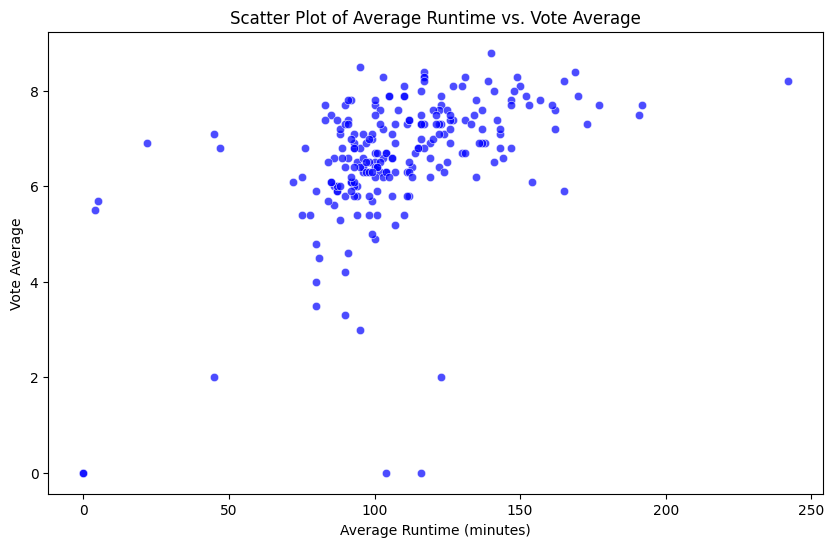
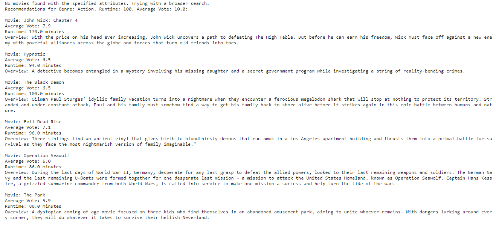

Project 4: Popular Movies
Introduction
In the context of this project, my objective is to address the challenge of movie recommendations. Utilizing clustering techniques, I aim to devise a system capable of suggesting movies derived from the top 10,000 popular films on TMDB (The Movie Database).
What is clustering and how does it work?
Clustering serves as a data analysis technique that groups comparable data points together. The process involves assigning and updating clusters until they converge. This is achieved through the application of algorithms such as k-means and others to delineate and refine these clusters.
Introduce the data
The dataset utilized for this analysis is sourced from the "Top 10,000 Popular Movies on TMDB" available at Kaggle.com. TMDB, short for The Movie Database, provides comprehensive information, including movie titles, release dates, runtime, genres, production companies, budget, and revenue. The data extraction was performed using TMDB's public API.
Data Understanding/Visualization
To enhance my comprehension of the dataset, I crafted a graph illustrating the distribution of movie genres. For manageability, I opted to include only a selection of popular genres rather than incorporating every genre available.

This chart holds significance as it highlights substantial variations in the quantity of movies across different genres, potentially influencing the recommendations generated by the model. Additionally, I generated a separate graph to illustrate the relationship between a movie's runtime and its score. This graph reveals that a significant proportion of movies tend to have a runtime of approximately 100 minutes. Collectively, these insights provide valuable information on potential biases or distortions within my model. For instance, an overrepresentation of certain genres might result in the model performing more effectively in those genres compared to others.
Pre-Processing The Data
To initiate the pre-processing phase, I employed the elbow method to identify the optimal k-value, determined as 2 in this instance. Subsequently, I addressed missing values by excluding entire movies from the dataset to avoid introducing inaccurate information that could compromise the model. I consolidated pertinent features into a singular column for vectorization, and subsequently applied TF-IDF (Term Frequency-Inverse Document Frequency) for vectorization. Additionally, I crafted a function named recommend_movies that filters movies based on provided attributes, incorporating a tolerance factor to accommodate the possibility of users submitting values that may not precisely match a movie's attributes. The recommendations encompass movies within the specified cluster, along with one movie closest to the centroid of that cluster.
Modeling
I opted for the KMeans model due to its efficiency, ease of interpretation, and simplicity. The model excels in grouping items based on their similarity, making it particularly beneficial for a movie recommendation system.
Storytelling (Clustering Analysis)
Analyzing the two distinct clusters, it becomes evident that Cluster 0 primarily comprises movies with intense themes such as action, crime, thriller, or horror. On the other hand, Cluster 1 predominantly consists of movies that are family-friendly or have a light-hearted tone. Leveraging these clusters enhances my model's ability to offer more targeted recommendations based on the user's preference for a particular movie type. I successfully developed a model capable of recommending movies, such as horror films, by providing relevant information upon user input.
Impact Section
The potential positive impact of my project lies in aiding individuals in choosing a movie to watch and discovering films they may not have been aware of. While broadening someone's cinematic preferences and assisting them in deciding on a movie are favorable outcomes, my model also presents certain shortcomings that could lead to negative consequences. I aimed to incorporate three key factors—genre, runtime, and average score—allowing users to specify the type of movie, its duration, and its overall rating. However, my model exhibits limitations in considering these factors effectively; it tends to recommend similar movies within a genre even when users alter the runtime and rating preferences. While some flexibility in user input is necessary due to the likelihood of an exact match being improbable, this, coupled with clustering, results in a lack of diversity in the model's movie recommendations. This limitation could be detrimental, as a model that consistently suggests movies the user has already seen or fails to diversify recommendations may render it practically ineffective.